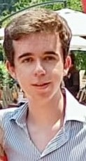

Team D
Introduction
UpHealth Technologies want to develop a mobile application that will provide at-home healthcare services to people like uber and other service providers. Team D is responsible for the first step of application development.
Project
UpHealth application will include a loading screen when the user launches the app. Users will be able to choose between logging in with an existing account or creating a new account. Users will get an introduction that will inform them how to use the app and what are the basic functionalities the app has
This application has the potential to help improve today’s healthcare service providers to be able to manage their schedules and clients easier through UpHealth system and improve the client-side to be able to book a service easier and has more options to choose the service provider they want.
Dang Nhat Kha Hoang
Dang is responsible for the Backend and Frontend of the application.
Ken Kanjanaprayut
Ken is responsible for the Frontend of the application and the design of UI/UX.
Emilio Barrios Ramirez
Emilio Is responsible for the Backend and Frontend of the application.
Ken Kanjanaprayut
 Ken is a hardworking student with a motivated attitude and a variety of powerful skills, Have experience in programming and design. Committed to contributing his expertise in an interactive media environment. Even though he has no experience in working but willing to try and work hard for it.
Ken is a hardworking student with a motivated attitude and a variety of powerful skills, Have experience in programming and design. Committed to contributing his expertise in an interactive media environment. Even though he has no experience in working but willing to try and work hard for it.
Emilio Barrios Ramirez

Emilio has experience in software development and has always been passionate about various programming languages such as Python, Java, JavaScript, Swift, C#, and C++. He likes to work on the back-end and front-end of the software
Dang Nhat Kha Hoang
Dang has been interested in technology and programming since he graduated from high school, Dang is enthusiastic and wants to improve his programming skills. He enjoys problem-solving and has a great passion for a videogame. He is open to learning new tech and expanding his knowledge.
Conclusion
Everyone in Team D would like to express our gratitude to UpHealth for letting us handle this important and future-driven project. We will do our best to develop and make a good foundation for the development in the future.